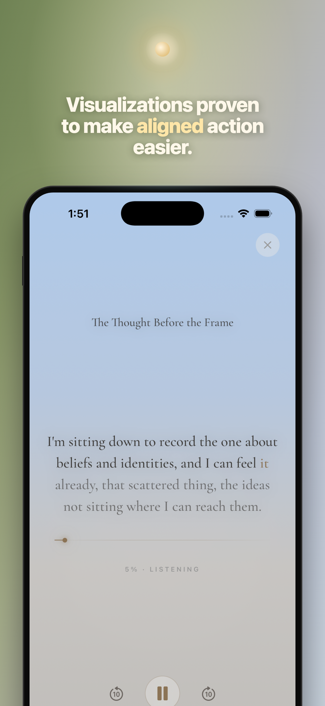
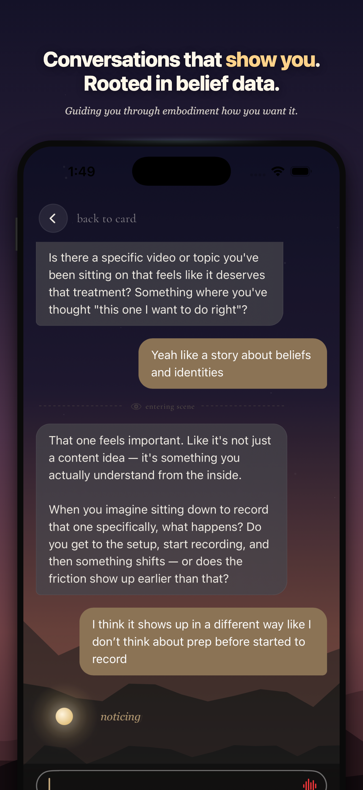
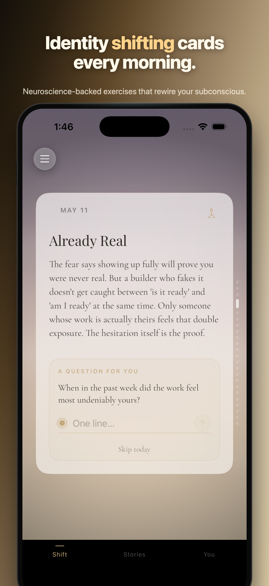
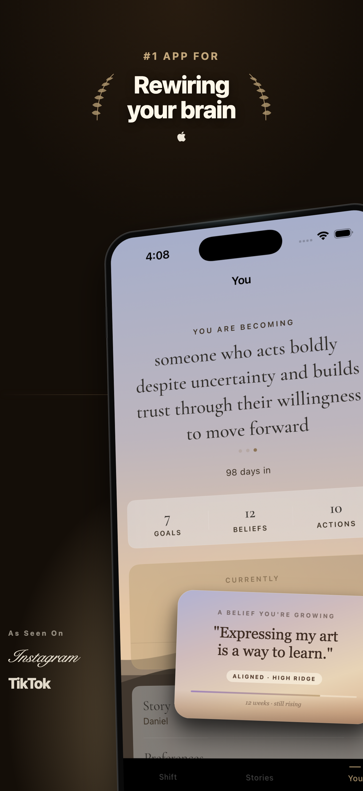
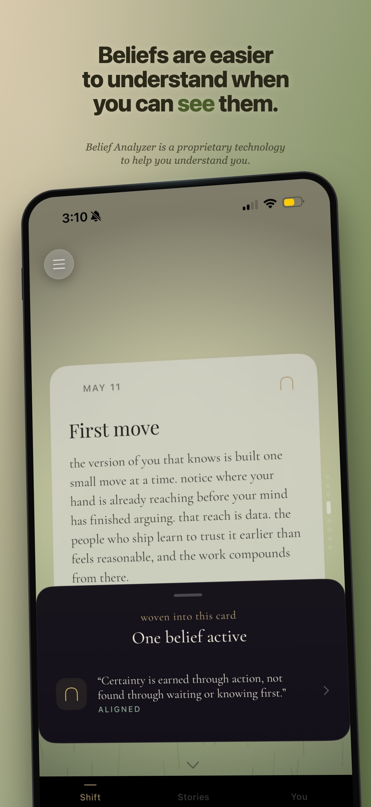

Deep visualization sessions that surface hidden beliefs, rewire patterns, and close the gap between who you are and who you want to be.
Already have an account? Sign in



I've learned a lot about identity shifting through using Daydream and it has helped prime my brain before doing things that I previously thought were difficult.
Early user
The science, briefly
Daydream just gives them a daily container.
The same brain regions activate whether you're doing something or vividly imagining it. Olympic athletes have used this for fifty years.
Anxiety often guards an old identity. When you rewrite the identity, the threat response calms with it.
When you revisit a memory and reframe it, your brain literally re-encodes it. Repetition isn't passive. It edits.
What it looks like
Every card, every story, every conversation points at the same thing: feeling like the version of you that's already becoming.


A note from the creator of Daydream
I built Daydream because every self-improvement method I tried made me feel further from the person I was trying to become. I wanted something that helps me embody the version I already know I want to be, because who else but me would know who I want to be?
The idea isn't new. Neville called it living in the end. Dispenza calls it rehearsing the future self. The traditions I grew up around called it visualizing. What's new is that we can finally use technology to make embodiment a daily practice instead of a theory to implement on our own.
Daydream is that practice. Not a coach, not a journal, not a meditation app. A few minutes every morning to align you with the version you are becoming.
Karthik
Three days free. iPhone, in your pocket, every morning.
Already have an account? Sign in